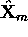
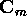
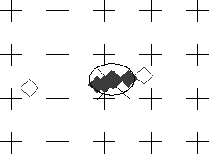

While it is now possible to obtain a quantitative measure of the uncertainty of a position estimate, based on the accuracy of its underlying tracked landmark, it is still possible that an estimate may have a relatively small error estimate and yet land far off the mark from the true position. For instance, this will occur if a candidate landmark is incorrectly matched to a tracked landmark whose error model is small. Therefore, in order to compute a robust mean, it becomes important to detect and eliminate outliers before performing the merging operations defined in equations 5.10 and 5.11.
Outlier detection is performed by finding the median position estimate
, and computing a median covariance,  from
the set of predictions and their associated covariances (recall that
the set of predictions is defined by the predictions computed for each
candidate landmark observed in the image). defines an
ellipsoidal region of configuration space, centred at ,
within which predictions can be considered to be
acceptable .
.

Figure 5.6: A set of filtered
predictions. The ellipse corresponds to the covariance of the
median AT. Solid diamonds represent retained predictions whereas
hollow diamonds represent rejected predictions. The `+'s represent
a portion of the locations at which training images were obtained.
The individual predictions are filtered based on the region defined by the median AT. Predictions falling outside the region are discarded, a new median AT is computed, and the filtering is repeated. This process continues until all of the predictions remaining in the set fall within the acceptable region. Figure 5.6 depicts a set of position estimates (the set of all diamonds), the median estimate (the ellipse) and those estimates which are considered acceptable for merging, (the solid diamonds). The `+'s represent locations at which training images were obtained.
Once outliers have been filtered, the final step in obtaining a position estimate is to merge the individual estimates using the merging operation for ATs, as defined by equations 5.10 and 5.11. The confidence in the final result is expressed by the final error estimate. The next chapter will present the results of several experiments which demonstrate the robustness of the entire method.